Lab 4 – Designing a data model
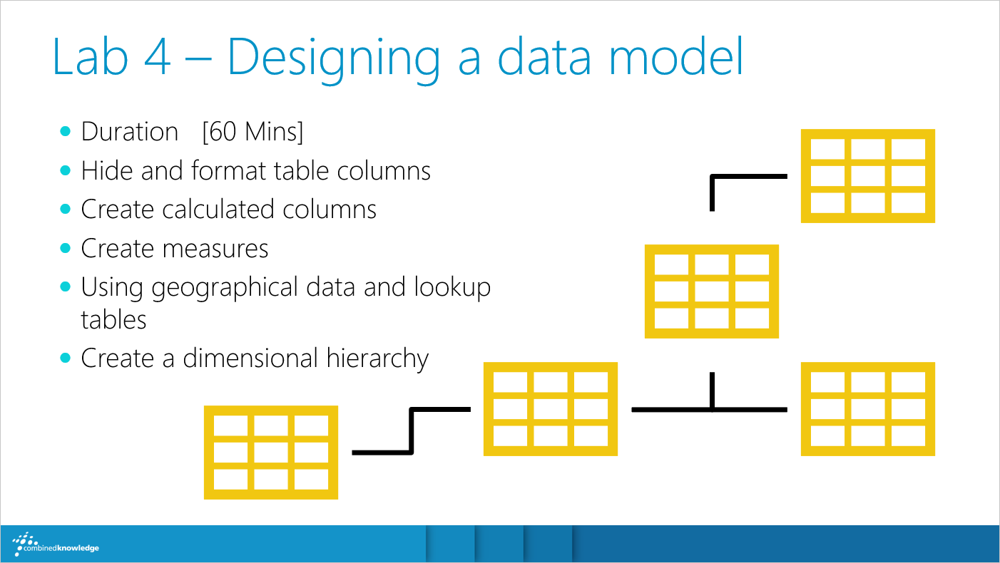
In this lab, we will be exploring our data readiness and whether it is suitable for answering our
grain statements. For example, are our columns in the right format to be presented in our reports, do we have all the
right data, and will we be able to interact with our data as we expect to? We will discover grey areas in our data and
how to use DAX to calculate new information to plug those gaps. There will be other issues with our model too but as
we will learn, Power BI Desktop has many aces up its sleeve which can resolve our issues.
For this exercise you will need to open your House Rules Sales Analysis
project file which was completed in Lab 3. If you did not finish the last lab, we have a completed file for you to
continue from. Simply open your download pack, and open the folders Completed Labs > Lab 3 – Queries then open the PBIX file.
Exercise 1 – Hide and format table columns
When we were building our queries in Power Query Editor, we focused on moving important ID columns
into the Facts table, which in our data model is the Sales table. Although the ID columns are great for forming
relationships, we will not use them in our reports. To avoid confusion when building reports later, we will simply
hide these columns from the report view. We will also look at more specific formatting for some of our date and
currency columns.
- In the rail menu on the left side of the Power BI Desktop application, click on the Report view, if it
is not already selected
- In the Fields pane on the right of report view, expand the Sales table
|
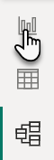
|
- You will notice there are a selection of columns that we would not really use for
reporting for example CustomerId, and there are more in the other tables
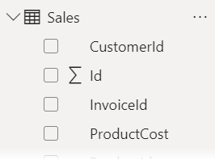
- In the rail menu click on Model
- In the Sales table, right click on CustomerId and choose Hide in report view (note you can also click on
the
 visible icon when your mouse is positioned over
a column in the new model view, the icon will turn to
visible icon when your mouse is positioned over
a column in the new model view, the icon will turn to  hidden)
hidden)
- Repeat this step for:
- Id
- InvoiceId
- ProductId
- In the Customers table, hide CustomerId
- In the Products table, hide ProductId
- In the Purchases table, hide InvoiceId
- The result should look like this:

- Now that we have tidied up the fields, return to Report view and expand the tables in the Fields pane to see the changes
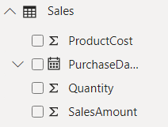
- Next, we will add some further precision to our column formatting, to do this we will need to go
to data view, click Data
 in
the rail menu
in
the rail menu
- In the Fields pane on the right side of the window, expand the Customers table and click on BirthDate
- The columns format is currently dd mmmm yyyy which appears as the highlighted data below, with
the column selected click on the Format drop down in the Formatting
category of the ribbon as shown below
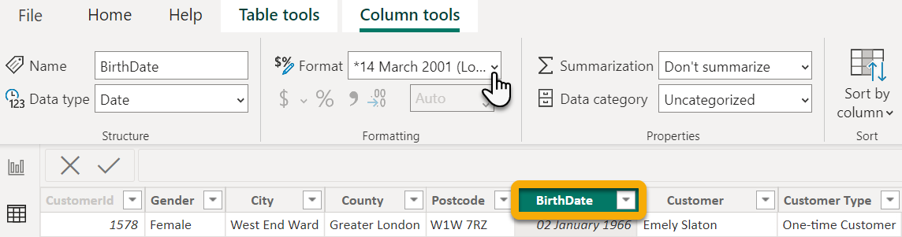
- Change the date format to (dd/mm/yyyy)
- Next in the Fields pane, select the Products
table and select the UnitCost column
- With the column selected, change the format from General to Currency
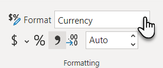
- Next click on the $ drop down to pick a specific
currency, then choose £ English (United Kingdom)

- Repeat steps 17 and 18 for the ListPrice column
- Select the GameImageURL column, and in the Properties category of the ribbon, set Data Category to Image URL as shown below
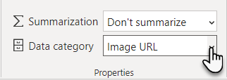
- Next, we will format the columns in the Sales table, in the Fields pane click on Sales
- Select the Quantity column and in the Formatting
category of the ribbon click on Comma separated which is the button that looks like this
next to the % option,
which will use a 1,000 separator (which would appear as 1000 without)
- By adding the comma separator, the format has changed to a decimal number, decrease the decimal
number from 2 to 0

- Next, using what we have practiced so far, update the format of the following columns in the Sales table:
- Update SalesAmount to Currency - £ English (United Kingdom)
- Update PurchaseDate to dd/mm/yyyy
- Update ProductCost to 2 decimal places
- That is all our current columns formatted, however we may format some of our new
columns later
Exercise 2 – Create calculated columns
Now that we have investigated our formatting, we now need to start finding the holes in our data. We
have been asked to report on sales profit, purchase year, ages and age groups. Although we do not actually have any of
this information, we do have some columns that could help us build answers. For example, our sales profit is our sales
amount minus our product cost. Other examples are the purchase year which we can get from the purchase date and the
age and age groups can be calculated from our customers birth date. To create these new columns, we will use DAX.
- To begin, let us calculate our sales profit, in the Sales table, which
should be open from the previous exercise, click on the Table tools tab in the ribbon and
select New column from the Calculations category as shown below
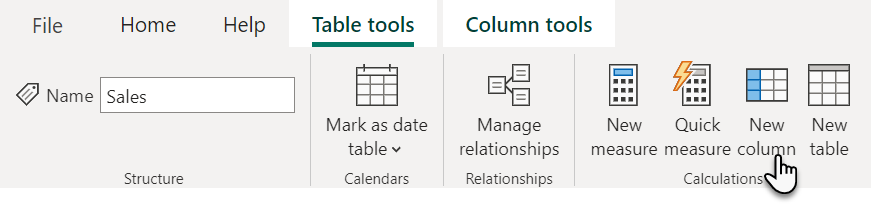
- In the formula bar enter SalesProfit =
Sales[SalesAmount]-Sales[ProductCost] then press Enter
- Format the new column to have 2 decimal places in the Column Tools tab of the ribbon
- Next, we need our purchase year, in the Sales table, in the Table tools tab of the ribbon click on New column and enter this
formula
Purchase Year = YEAR(Sales[PurchaseDate]) then press Enter
- To work out the financial year of the sale, in the Table tools tab of the
ribbon click on New column and enter this formula (or better yet, copy and paste it from
this book):
Financial Year = VAR fy = IF (MONTH ( Sales[PurchaseDate] )
<= 3,
VALUE ( FORMAT ( Sales[PurchaseDate], "YY" ) ) - 1,
VALUE ( FORMAT ( Sales[PurchaseDate], "YY" ) ) )
RETURN
CONCATENATE ( "FY ", CONCATENATE ( fy, CONCATENATE
("/", fy + 1 ) ) )
then press Enter
- Now we will work out our customers ages, select the Customers
table from the Fields pane
- In the ribbon, in the Table tools tab, click on New
column
- Enter the following into the formula bar
Age =
Floor( (TODAY()-Customers[BirthDate])/365, 1) then press Enter
- Now that we know the customers age, we can create another column to add each customer to an age
group, click New column once more (from the ribbon)
- Enter the following formula (or copy and paste it from this book):
Age Group = SWITCH( TRUE(),
[Age] >= 65, "Ages 65 and over",
[Age] >= 50, "Ages 50 TO 65",
[Age] >= 40, "Ages 40 TO 49",
[Age] >= 30, "Ages 30 TO 39",
[Age] >= 18, "Ages 18 TO 29",
[Age] < 18, "Ages under 18" )
- The formula should look like this if you typed it in manually, you can click in the formula and
hold Shift then Enter to add return carriage to the formula (it’s
not necessary but can help with the formatting)
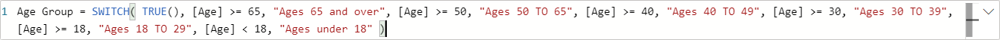
Below
shows the formula with return carriages
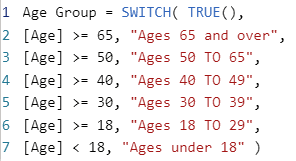
- Press Enter to create the column (if you get an error, click on the
column heading to access the DAX code again to make changes, remember you can always copy and paste the code from
this document as long as you have it in a digital format)
Exercise 3 – Creating measures
Not all the information we calculate needs to generate a new column, for example the total sales
revenue is a sum of our sales amount. In fact, to answer some questions, our calculations may need to involve data
from multiple tables. This is where measures come in, allowing us to calculate information from more than one source
to achieve a resultant value that can be used in our reports.
- We need to work out the total units sold, to do this, select the Sales
table from the Fields pane (you may wish to collapse some of the expanded tables to make
navigation easier)
- In the Table tools tab of the ribbon, click on New
measure found in the Calculations category as shown below
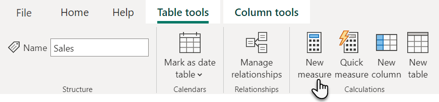
- Enter the following into the formula bar Units Sold =
SUM(Sales[Quantity])
- Press Enter on your keyboard and the new measure called Units Sold will appear under the Sales table
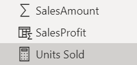
- To format the measure, select Units Sold from the Sales table and then click on the comma separator
 from the Formatting category of the ribbon and set the decimal places to 0
from the Formatting category of the ribbon and set the decimal places to 0
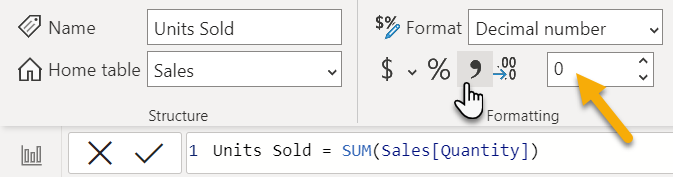
- Next, to create our sales revenue measure, in the ribbon click on New
Measure from the Calculations category and enter the following into the formula bar
Sales Revenue = Sum(Sales[SalesAmount])
- To format the measure, select Sales Revenue from the Sales table and change the type of currency by clicking on the $ drop
down and select £ English (United Kingdom) and change the decimal places to 0
- Create the following measures in the Sales table using what you have
practiced:
- Create a Product Cost measure
- Formula: Product Cost = Sum(Sales[ProductCost])
- Formatting: Currency type £ English (United Kingdom) with 0 decimal places
- Create a Profit measure
- Formula: Profit = SUM(Sales[SalesProfit])
- Formatting: Currency type £ English (United Kingdom) with 0 decimal places
- Now, switch over to the Customers table by selecting it from
the Fields pane
- Create a new measure using the formula Customer Count =
COUNTROWS(Customers)
- Format the measure by selecting Customer Count and click on the comma separator

- Some of the values that we have created are tidier than older values, for example age instead of
birthdate so we will use what we practiced earlier and hide some of those columns, in the rail menu, click Model
- Resize the tables if required to show all the values then right click on
and click Hide in report view for the following columns:
Customers (table)
Sales (table)
- ProductCost (be careful not to select Product Cost which is our measure)
- PurchaseDate
- Quantity
- SalesAmount
- SalesProfit
Products (table)
- ListPrice
- MinimumAge
- UnitCost
- Below is a summary of these changes to cross check against your work

Exercise 4 - Geographical data and lookup tables
Now that we have some new columns and measures to answer some of our grain statements, we have been
asked to add more regional data to our reports. This includes which country the order is going to and what sales
region is the customer based in (northern, central or southern which are boundaries devised by House Rules Board Games
and are not a universally known geography). To accomplish this, we can use a lookup table provided by our HR team,
which we will add to our data model. A preview of the lookup table is shown on the following page.
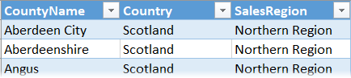
- From Model view, in the Home tab in the ribbon, select Excel workbook from the Data category
- In File Explorer, locate your training pack and
open the folder Labs > Data Sources and select UK Sales Regions and click Open
- Select the UKSalesRegions table then click Load
- Click Manage relationship in the ribbon
- If a relationship is not automatically created between the UKRegionalSales and the Customers table, click Autodetect… then Close
- Select the new relationship Customers(County) to UKSalesRegions(CountyName) and click Edit
- Set the Cross filter direction to Both and click
OK
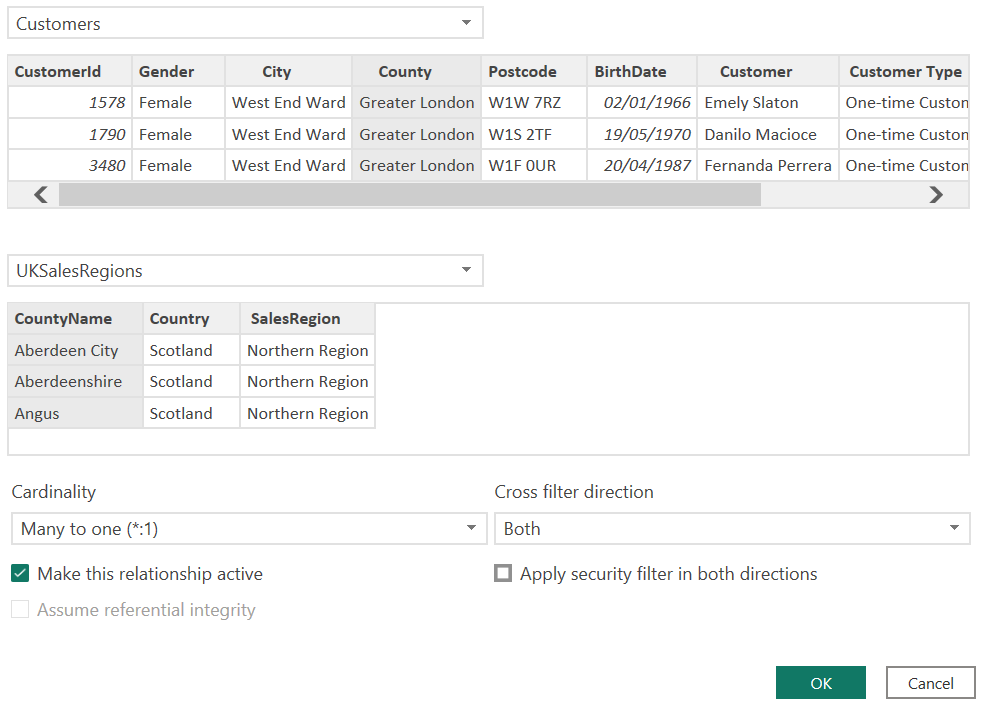
- Click Close and optionally reposition the tables in your data model (Ctrl
+ left click to select more than one table to bulk drag)
- Navigate to Data view using the rail menu
- In the Customers table, click New Column in the
Home tab of the ribbon
- Enter the following formula Country =
RELATED(UKSalesRegions[Country])
- Next, click New Column in the Home tab of the
ribbon
- Enter the following formula Sales Region =
RELATED(UKSalesRegions[SalesRegion])
- You will now have some new geographical data for your customers, we now need to format our
geographical columns
- Select the Postcode column and then in the ribbon select the Column tools tab and for Data category choose Postal code

- Repeat this step for County, adding the data category County
- Also repeat this step for Country, adding the data category Country
- Often when used on a map, some locations will be plotted in the wrong countries e.g. Athens,
Greece vs Athens, Georgia, USA so to disambiguate the data we will create a final column by clicking New column from the Column tools tab
- Enter the formula Location = Customers[County] & ", " &
Customers[Country]
- Press Enter on your keyboard then format the new Location column by selecting it and setting the Data Category to Place
- Lastly, we will hide the lookup table in report view as we now have the essential data in our
Customers table, to do this click on Model in the rail menu
- Click on the ellipsis (…) at the top right of the UKSalesRegions table and choose Hide in report view (or click on the
icon at the top right of the table)
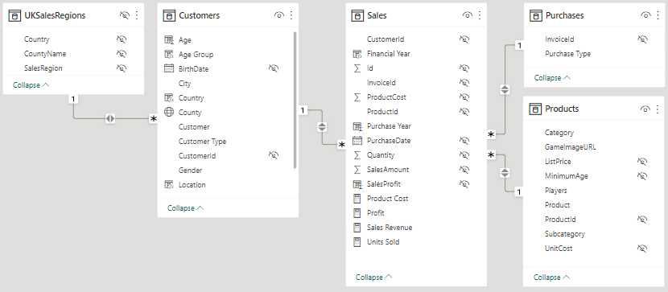
- Click Save at the top left of the application
Exercise 5 – Create a dimensional hierarchy
We will finish up by adding a quick dimensional hierarchy to our data model. They allow us to use our
columns to create a drill down through our data. We have a column for Product, Subcategory and Category which could be
turned into a hierarchy to allow us to drill down through our product catalog.
- Click on Data view in the rail menu
- Expand the Products table from the Field pane
- To create the hierarchy, place your mouse cursor over the Category field,
and then click on the ellipsis (…) then choose Create hierarchy

- A new hierarchy is created called Category Hierarchy
- Move your mouse cursor over the Subcategory field and click on the ellipsis (…), select Add to hierarchy > Category Hierarchy
- Repeat the previous step for the Product field
- Right click on the hierarchy heading and choose Rename
- Name the hierarchy Product Category then press Enter
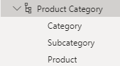
- Now click Save once more at the top left of the application and you are
done!